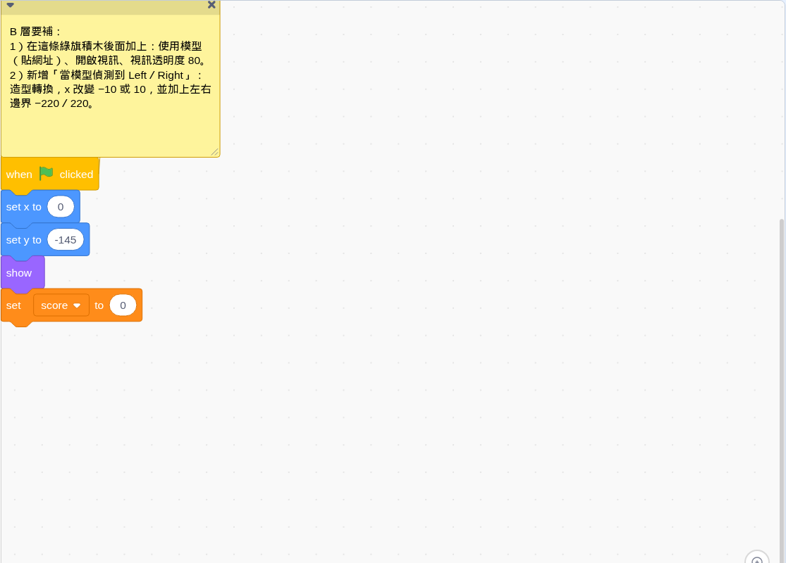
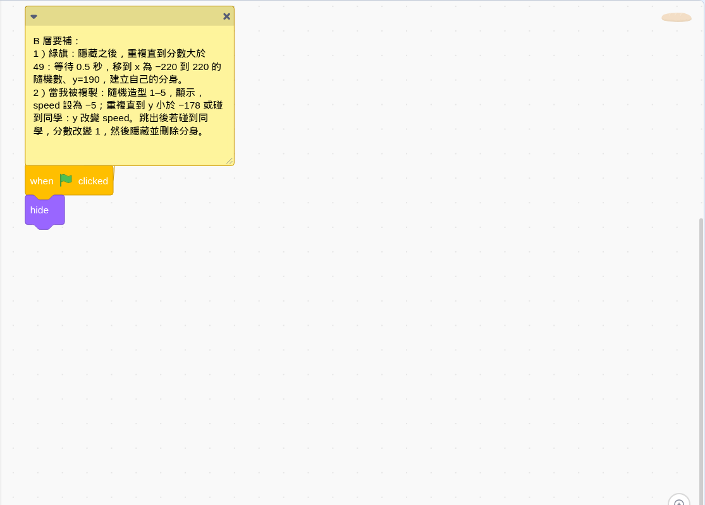

你的檔案一開始是這樣
「同學」綠旗只做好位置、顯示和分數歸零；「食物」綠旗只做好隱藏。其餘積木要自己補上。


B 層要補的積木
- 「食物」、當綠旗被點下：在「隱藏」之後，重複直到分數大於 49：等待 0.5 秒，移到 x 等於 −220 到 220 的隨機數、y 等於 190，建立自己的分身。
- 「食物」、當我被複製：造型改為 1 到 5 的隨機數，顯示，將 speed 設為 −5；重複直到 y 座標小於 −178，或碰到「同學」：y 改變 speed。跳出後，若碰到「同學」則分數改變 1；然後隱藏，刪除此分身。
- 「同學」、當綠旗被點下（接在定位、顯示、分數歸零之後）：使用模型（貼上網址），開啟視訊鏡頭，視訊透明度設為 80。按綠旗後要等綠色剔號。
- 當模型偵測到 Left：重複直到 Left 信心度小於 0.5：造型改為 Left，x 改變 −10；若 x 座標小於 −220，將 x 設為 −220。Right 同樣，x 改變 10，右邊界限為 220。
完成後，記得先關掉 Teachable Machine 的 Input 鏡頭，再把模型網址貼進「使用模型」。